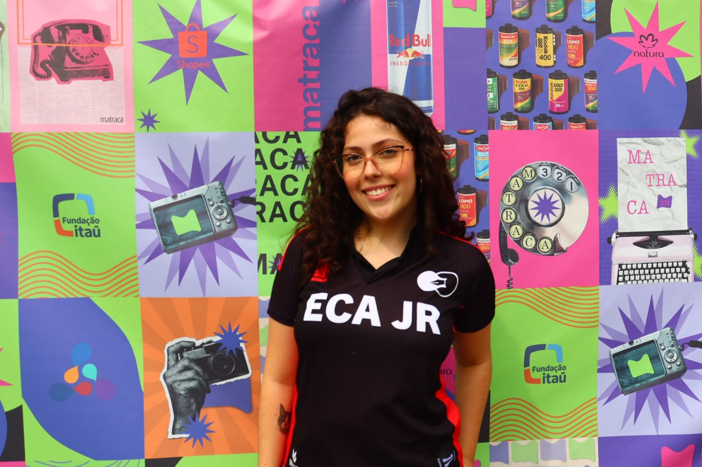
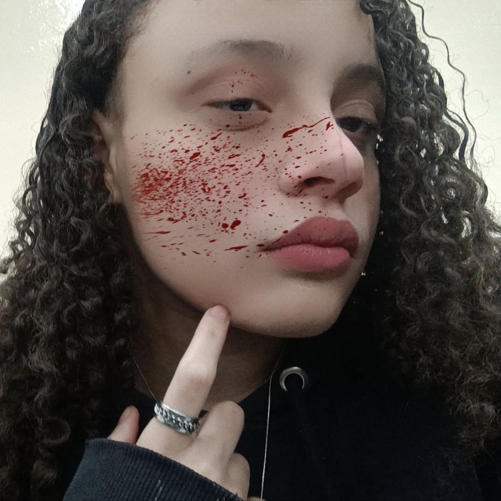
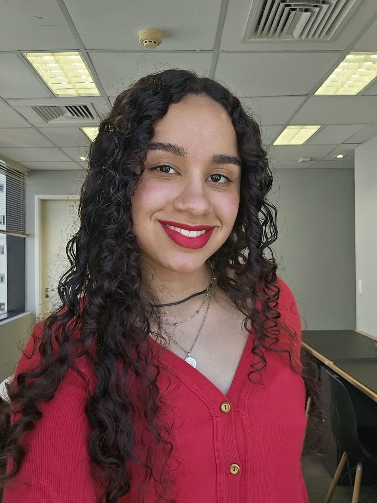
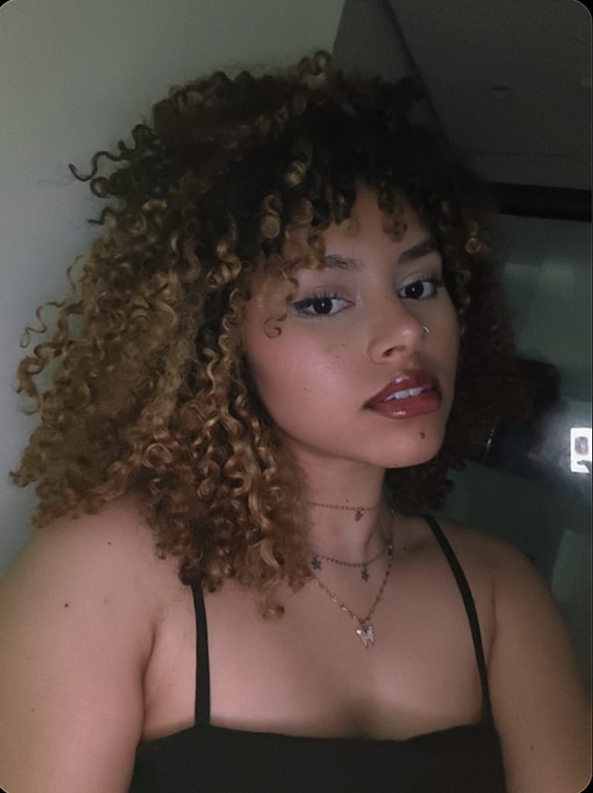
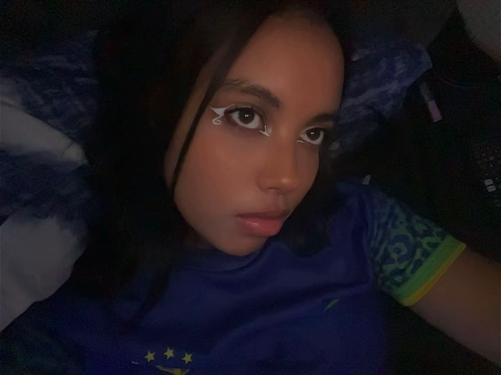
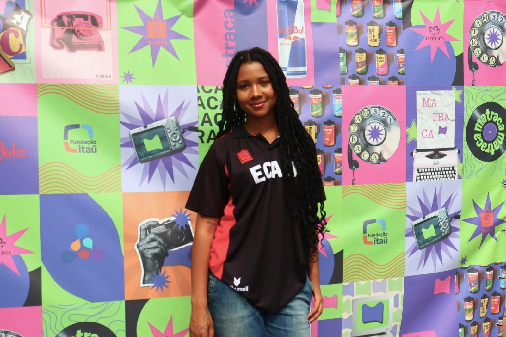

Ana Júlia Toso
Apresentadora
Estudante de Turismo da Escola de Comunicação e Artes (ECA-USP) e é a Diretora de Planejamento e Redação da ECA-JR. É uma das apresentadoras do projeto e também participa da BATERECA.
Histórias, Destinos e Experiências.
Conheça as pessoas por trás do São Paulo Sem Filtro.

Estudante de Turismo da Escola de Comunicação e Artes (ECA-USP) e é a Diretora de Planejamento e Redação da ECA-JR. É uma das apresentadoras do projeto e também participa da BATERECA.

Estudante de Turismo da Escola de Comunicação e Artes (ECA-USP) e integrante do Rosa dos Ventos. Programadora principal do projeto e responsável pelas tecnicalidades do trabalho.

Estudante de Turismo da Escola de Comunicação e Artes (ECA-USP). É uma das analistas do projeto, trabalhando diretamente nas pesquisas e fontes do projeto. Trabalha em uma Agência de Viagens e tem expeiência na área turística.

Estudante de Turismo da Escola de Comunicação e Artes (ECA-USP). É uma das analistas do projeto, trabalhando diretamente nas pesquisas e fontes do projeto. Trabalha em uma Agência de Viagens e tem expeiência na área turística.

Estudante de Turismo da Escola de Comunicação e Artes (ECA-USP) e é a Diretora de Comunicação e Mídia da ECA-Junior. Também é uma das apresentadoras do nosso projeto.

Estudante de Turismo da Escola de Comunicação e Artes (ECA-USP) e é a Diretora de Turismo da ECA-JR. É uma das apresentadoras do projeto e integrante do Rosa dos Ventos.
Nosso projeto nasceu de uma proposta acadêmica que nos desafiou a desenvolver um produto digital sobre o qual tivéssemos maior autonomia, desde sua criação até sua hospedagem e compartilhamento. A ideia era construir algo que não dependesse diretamente de plataformas tradicionais, como redes sociais e aplicativos de distribuição de conteúdo, evitando que nosso trabalho ficasse sujeito às limitações, aos critérios de circulação e aos possíveis vieses desses intermediários. Foi pensando nisso que decidimos desenvolver nosso próprio site, um espaço simples e organizado, criado por nós mesmas para reunir e compartilhar nossos episódios de podcast. Para disponibilizá-lo ao público, escolhemos o GitHub Pages, um serviço gratuito de hospedagem que nos permite administrar nosso conteúdo com maior independência, respeitando as diretrizes da própria plataforma. Dessa forma, conseguimos criar um ambiente acessível, de fácil navegação e que nos oferece maior liberdade sobre a maneira como nosso projeto é apresentado.
A escolha pelo formato de podcast surgiu justamente da vontade de compartilhar informações de maneira prática, dinâmica e envolvente. Por meio do áudio, conseguimos transformar nossas pesquisas em narrativas mais próximas do público, combinando acontecimentos históricos, reflexões e experiências pessoais das integrantes. Além disso, queríamos que nossos conteúdos pudessem ser acessados facilmente, sem a necessidade de instalar aplicativos específicos ou utilizar plataformas de streaming, permitindo que os visitantes encontrassem todos os episódios reunidos em um único lugar.
Quanto à escolha do tema, buscamos desenvolver algo que dialogasse diretamente com nossa formação como estudantes de Turismo, mas que também nos permitisse explorar questões que vão além das abordagens turísticas mais tradicionais. Assim, decidimos trabalhar com a ideia de contranarrativas de lugares turísticos da cidade de São Paulo, trazendo à tona histórias, acontecimentos e perspectivas que muitas vezes acabam esquecidos, pouco divulgados ou ofuscados pelas narrativas mais conhecidas desses espaços. Afinal, por trás de lugares frequentemente lembrados por sua arquitetura, beleza ou importância cultural, também existem memórias, conflitos, transformações e experiências que ajudam a compreender melhor seus significados e sua relação com a cidade.
Para construir nossos episódios, reunimos informações provenientes de pesquisas acadêmicas, documentos históricos, notícias, relatos e outras fontes que nos permitissem conhecer diferentes perspectivas sobre os locais escolhidos. A partir desse material, organizamos e adaptamos as informações para o formato de podcast, incorporando também reflexões e vivências pessoais das integrantes. Nossa intenção não é substituir uma narrativa por outra, mas ampliar o olhar sobre esses espaços, mostrando que um mesmo lugar pode carregar diferentes histórias e significados, dependendo de quem os conta e de quais experiências são consideradas.
Mais do que apresentar fatos históricos ou curiosidades, queremos incentivar uma reflexão sobre a maneira como conhecemos, visitamos e interpretamos os lugares ao nosso redor. Acreditamos que o turismo também pode ser uma ferramenta de valorização da memória, de reconhecimento de diferentes experiências e de construção de um olhar mais crítico sobre a cidade. Por isso, esperamos que nossos episódios não apenas compartilhem conhecimentos, mas também despertem a curiosidade e convidem os ouvintes a enxergar espaços familiares sob novas perspectivas.
Afinal, todo lugar tem uma história. E nem sempre é aquela que costumamos ouvir.